อ่าน → ลองทำ → ตรวจผล
ใช้ไฟล์ทดลองสำหรับฝึก เปิดบทความไว้ข้างโปรแกรม แล้วเรียนทีละหัวข้อ ไม่จำเป็นต้องใช้ทุกแท็บในครั้งเดียว
เป้าหมาย: เปิด View ได้ เลือกเครื่องมือถูกแท็บ และแยกให้ออกว่ากำลังแก้โมเดลหรือการแสดงผล
Revit มีคำสั่งจำนวนมาก แต่ผู้เริ่มต้นไม่จำเป็นต้องจำทุกปุ่มในวันแรก สิ่งสำคัญคือรู้ว่า คำสั่งแต่ละกลุ่มอยู่ตรงไหนและใช้ในสถานการณ์ใด บทความนี้พาไล่ดูพื้นที่หลักของหน้าจอจากภาพตัวอย่าง เพื่อให้เริ่มสร้างโมเดลและค้นหาคำสั่งได้อย่างมั่นใจ
ชื่อคำสั่งและชุดเครื่องมืออาจต่างกันเล็กน้อยตามเวอร์ชัน Revit หรือชุด Extension ที่ติดตั้ง แต่โครงสร้างหลักของหน้าจอยังคงเหมือนกัน
3 พื้นที่ที่ควรรู้จักก่อน
- Ribbon คือแถบด้านบน แยกคำสั่งตามประเภทงาน เช่น Architecture, Structure และ Systems
- Properties Palette คือแผงแก้คุณสมบัติของ View หรือ Element ที่เลือกอยู่
- Project Browser คือแผงรวม View, Schedule และ Sheet ของทั้งโครงการ
Ribbon: แถบคำสั่งหลักของ Revit
Ribbon แบ่งคำสั่งเป็นแท็บตามลักษณะงาน เมื่อเลือกแท็บแล้วจะเห็น Panel ย่อย เช่น Build, Circulation, Datum หรือ Work Plane วิธีใช้งานที่ดีคือเริ่มจากแท็บที่สอดคล้องกับสิ่งที่กำลังสร้าง แทนการค้นหาคำสั่งทีละปุ่ม
Architecture — สร้างองค์ประกอบสถาปัตยกรรม
ใช้สร้าง Wall, Door, Window, Component, Column, Roof, Ceiling และ Floor รวมถึง Room, Area, Grid และ Level เหมาะกับการเริ่มโมเดลอาคารและกำหนดพื้นที่ใช้งาน

Structure — โมเดลโครงสร้าง
สำหรับวาง Beam, Structural Wall, Structural Column, Floor, Truss, Brace และ Foundation ใช้ร่วมกับ Grid และ Level เพื่อให้ตำแหน่งกับระดับของโครงสร้างสัมพันธ์กันทั้งโมเดล
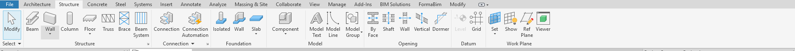
Concrete และ Steel — รายละเอียดคอนกรีตเสริมเหล็กและเหล็กรูปพรรณ
แท็บ Concrete มีเครื่องมือ Rebar, Reinforcement Settings, Precast และ Shop Drawing ส่วน Steel ช่วยสร้าง Connection, Plate, Bolts, Welds และคำสั่งปรับแต่งชิ้นงานเหล็ก ใช้เมื่อโมเดลต้องการรายละเอียดสำหรับงานผลิตหรือประสานแบบ
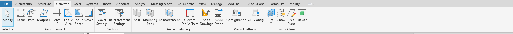
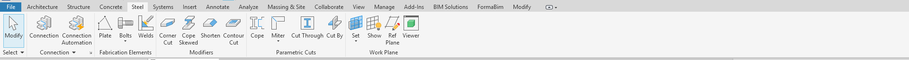
Systems — งานระบบ MEP
แท็บ Systems แยกกลุ่มคำสั่ง HVAC, Plumbing และ Electrical เช่น Duct, Pipe, Sprinkler, Cable Tray และ Electrical Equipment เหมาะกับการสร้างระบบประกอบอาคารและตรวจจุดเชื่อมต่อระหว่างระบบ
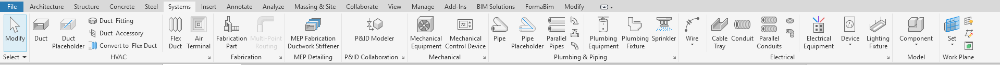
Insert และ Annotate — นำเข้าข้อมูลและทำเอกสารแบบ
Insert ใช้ Link CAD/IFC/Model, Import, Load Family และเชื่อมไฟล์อ้างอิง ส่วน Annotate ใช้ใส่มิติ ข้อความ Tag, Detail Line, Revision Cloud และ Symbol เพื่อสื่อสารแบบก่อสร้าง
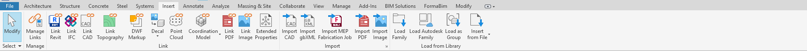
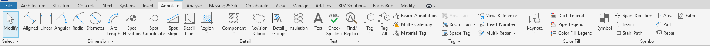
Analyze และ Massing & Site — วิเคราะห์และวางผัง
Analyze รวมเครื่องมือการตรวจสอบและวิเคราะห์ เช่น Space, Energy, Electrical และ Structural Analysis ขณะที่ Massing & Site ใช้สร้าง Mass, Toposolid, Site Component และ Parking เพื่อเริ่มต้นงานผังบริเวณหรือศึกษารูปทรง
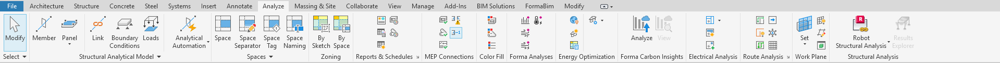
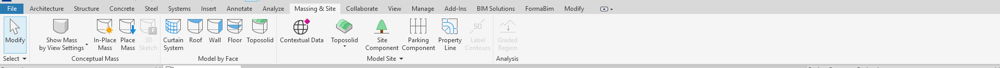
Collaborate, View และ Manage — ทำงานร่วมกัน ควบคุมมุมมอง และตั้งค่าโครงการ
Collaborate มี Worksets, Synchronize และ Coordination Review สำหรับทีมหลายคน View ใช้สร้าง 3D View, Section, Elevation, Sheet, Schedule และปรับ Visibility/Graphics ส่วน Manage เก็บการตั้งค่า Units, Materials, Project Parameters, Phases และ Design Options
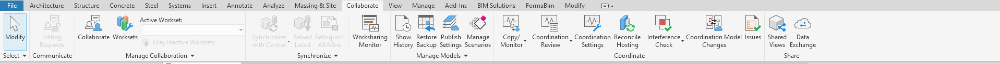
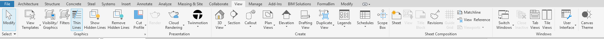
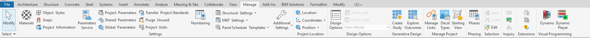
Add-Ins และ Modify — เครื่องมือเสริมและการแก้ไข
Add-Ins แสดง Extension ที่ติดตั้งเพิ่ม เช่น เครื่องมือส่งโมเดลหรือสร้างข้อมูลเฉพาะทาง ส่วน Modify เป็นแท็บที่ใช้บ่อยที่สุด เพราะรวม Move, Copy, Rotate, Align, Trim, Cut และคำสั่งแก้ไข Element ที่เลือกอยู่
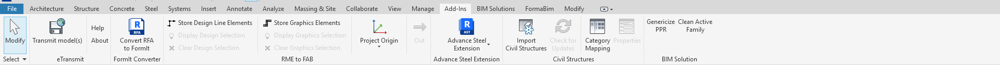
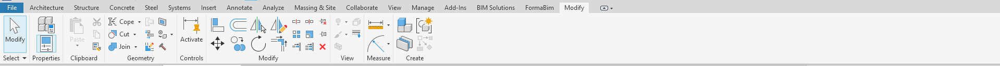
Properties Palette และ Project Browser
สองแผงนี้ช่วยให้ควบคุมโมเดลโดยไม่ต้องเปิดคำสั่งใหม่ Properties จะเปลี่ยนตามสิ่งที่เลือก เช่น View Scale, Detail Level, View Range หรือ Type ของ Element ขณะที่ Project Browser ใช้เปิดและจัดหมวด View, Schedule และ Sheet ทั้งหมดในโครงการ
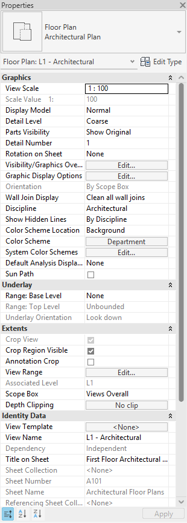
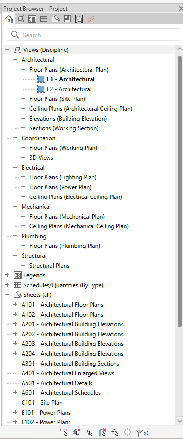
ลำดับฝึกใช้งานที่แนะนำ
เริ่มจากแบบฝึกเล็ก ๆ ด้านล่าง ใช้เวลาตามจังหวะของตัวเอง และตรวจผลก่อนเรียนหัวข้อถัดไป
เปิดแปลนและดูคุณสมบัติ
ดับเบิลคลิก Floor Plan ใน Project Browser คลิกพื้นที่ว่าง แล้วหา View Scale ใน Properties
ตรวจผล: ชื่อแปลนบนแท็บตรงกับ View ที่เปิด และ Properties แสดงคุณสมบัติของแปลน
วางผนังหนึ่งแนว
เปิด Architecture → Wall เลือกชนิดผนังและระดับอ้างอิงใน Properties แล้ววาดผนังสั้น ๆ ในไฟล์ทดลอง
ตรวจผล: เปิด 3D View จาก View แล้วเห็นผนังที่สร้าง ลองเลือกผนังและดูว่าคุณสมบัติเปลี่ยนจาก View เป็น Wall
คัดลอกและเปรียบเทียบ
เลือกผนัง ใช้ Modify → Copy เพื่อสร้างอีกแนว แล้วกลับไปดูแปลนและ 3D View
ตรวจผล: เห็นผนังสองแนวในโมเดลเดียวกันทั้งสองมุมมอง
ทบทวน: จะเปิดแปลน แก้ขนาดผนัง และใส่มิติ ต้องไปที่ไหน?
เปิดแปลน: Project Browser · แก้คุณสมบัติผนัง: เลือกผนังแล้วดู Properties · ใส่มิติ: Annotate หากตอบได้ครบ คุณเริ่มแยกหน้าที่ของพื้นที่ทำงานได้แล้ว
- เปิด View จาก Project Browser และสังเกตค่าที่ Properties Palette
- กำหนด Level และ Grid จากแท็บ Architecture หรือ Structure
- สร้าง Element ง่าย ๆ เช่น Wall, Column หรือ Floor
- ใช้ Modify เพื่อย้าย คัดลอก หรือจัดตำแหน่ง
- เปิด 3D View, Section และ Sheet จากแท็บ View เพื่อตรวจผลลัพธ์
- เมื่อทำงานเป็นทีม ให้เรียนรู้ Collaborate และตั้งชื่อ View/Sheet ตามมาตรฐานโครงการ
เมื่อใช้ Ribbon, Properties และ Project Browser ได้คล่อง การเรียนรู้เครื่องมือเฉพาะทางของ Revit จะเร็วขึ้นมาก
อ่านพื้นฐาน Revit ต่อ